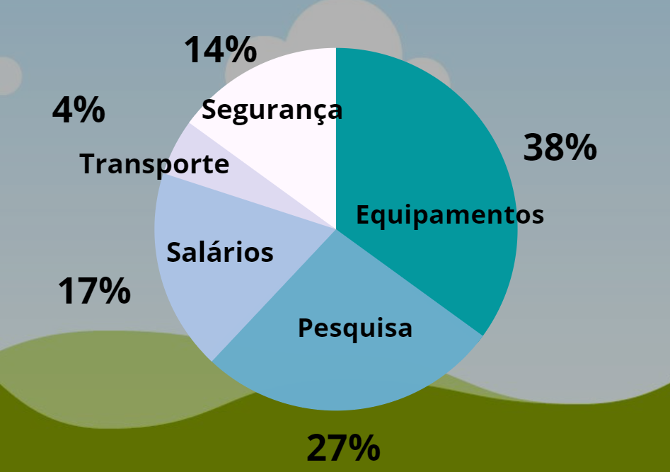

Toda doação feita para nossa ONG é diretamente utilizada pra ajudar o meio ambiente com um problema que vem cada vez mais aparencendo em nosso dia a dia.
Com a crescente produção de produtos eletrônicos, vem também um grande despejo de seus resíduos, como baterias, fios metálicos e outros componentes que podem prejudicar o meio ambiente.
Existem diversos riscos do lixo eletrônico na nossa sociedade, por exemplo, o descarte incorreto de pilhas e baterias podem causar danos sérios ao lençol freatico por conta das substâncias químicas que tais componentes liberam. Problemas como esses são difíceis de resolver e são, sobretudo, custosos, por isso nós pedimos contribuições para que então possamos combater esse tipo de poluição. Apenas com a ajuda de suas doações nós seremos capazes de diminuir drasticamente a poluição produzidas pela nossa era tecnológica.
As doações, em geral, ajudam a manter nossa ONG funcional. O dinheiro dos contribuintes é utilizado diretamente para fins benéficos ao meio ambiente e que ajudem a reduzir a poluição por resíduos eletrônicos.
Dentro de nossa organização temos diversos setores que precisam de auxílio financeiro, como: compra de equipamente, pesquisa, pagamento de salários, transporte e viagens e, sobretudo, segurança.
Cada um dos tópicos mencionados é essencial para o funcinamento da ONG, por isso a ajudas dos contribuintes é muito importante para nosso funcionamento integral.
Como mencionado anteriormente, essas são as áres que investimos: compra de equipamente, pesquisa, pagamento de salários, transporte e segurança.
Por questões de transparência, vamos detalhadamente informar-lhes mais sobre cada um dos tópicos:
Equipamentos: a maior parte do investimento finaneiro é destinado à compra de equipamentos. São adquiridos desde equipamentos pesados para limpeza profunda de resíduos quimícos possivelmente tóxicos, até simples catadores de lixo para recolher equipamentos eletrônicos pequenos despejados em locais inadequados.
Pesquisa: é essencial que nós tenhamos conhecimento com o que estamos lidando. A poluição eletrônica é muito mais do que apenas celulares jogados no chão. Muitos equipamentos possuem peças e componentes extremamente perigosos tanto para o ambiente quanto para nossa saúde. Assim, é importante que hajam pesquisas para sabermos como tratar tais resíduos, assim como proteger nossos participantes.
Salários: existem pessoas que trabalham integralmente em nossa ONG, ou seja, não possuem nenhum tipo de compensação monetária externa de nossa organização. Dessa forma, é muito importante que haja um retorno financeiro para nossos participantes/empregados, para que então possam continuar trabalhando para salvar o meio ambiente sem se preocuparem com uma possivel condição financeira debilitante.
Segurança: como já dito, muitos componentes eletrônicos são capazes de liberarem substâncias tóxicas tanto para o ambiente quanto para nossa saúde. Dessa forma, é preciso investir para garantir que nenhum dos integrantes da ONG obtenham qualquer tipo de contaminação ou doença durante o trabalho. Dentre os itens dentro da categoria de segurança podem ser listados: máscaras de gás, jalecos protetores, macacões protetores, luvas, botas, medidores de radiação, medidores de qualidade do ar, etc.
Transporte: nossa ONG não atua apenas em nível local, mas também regional, por isso é importante a adesão de meios de transporte para transferir nossos participantes para diversas áreas do Brasil.
Sua doação é muito bem vinda, saiba que você está ajudando de um forma extremamente positiva o meio ambiente e garantindo um futuro melhor para as futuras gerações!